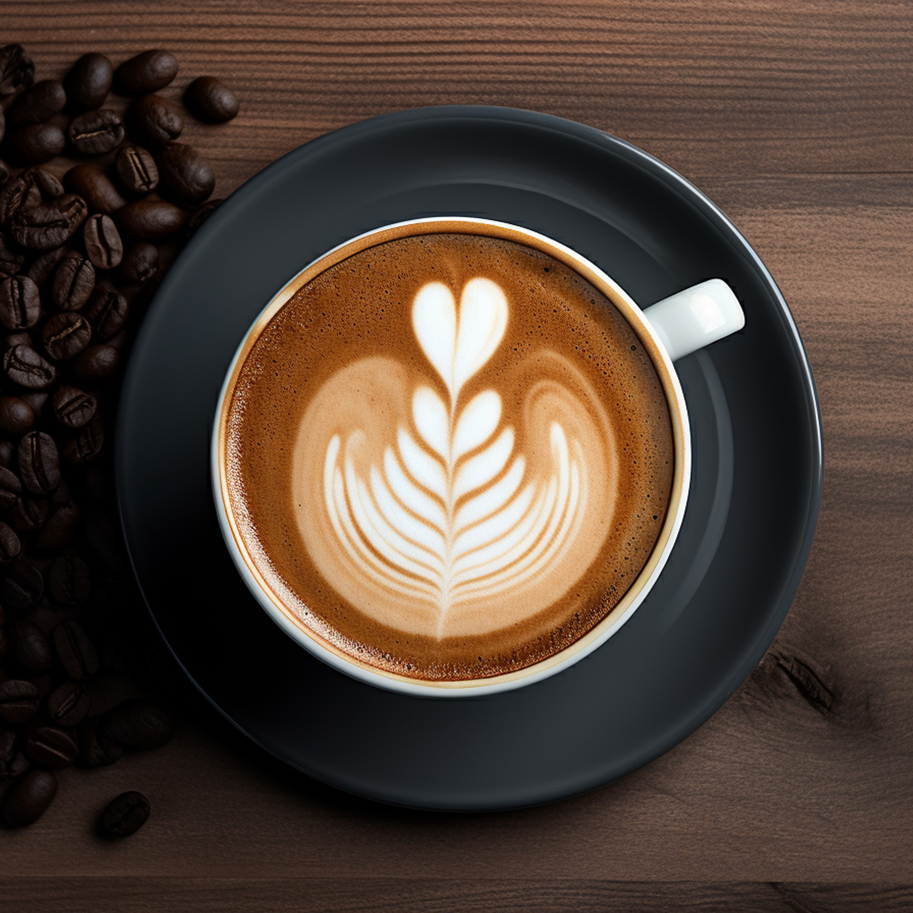
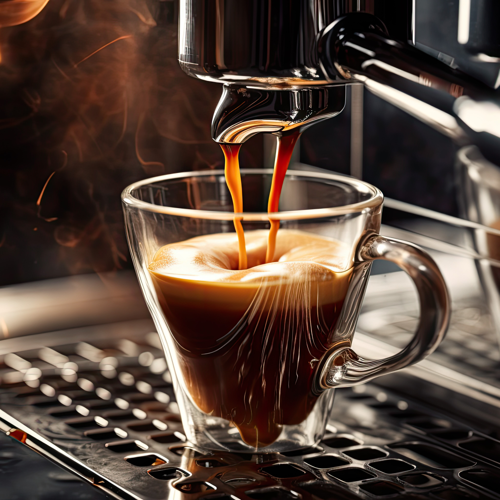
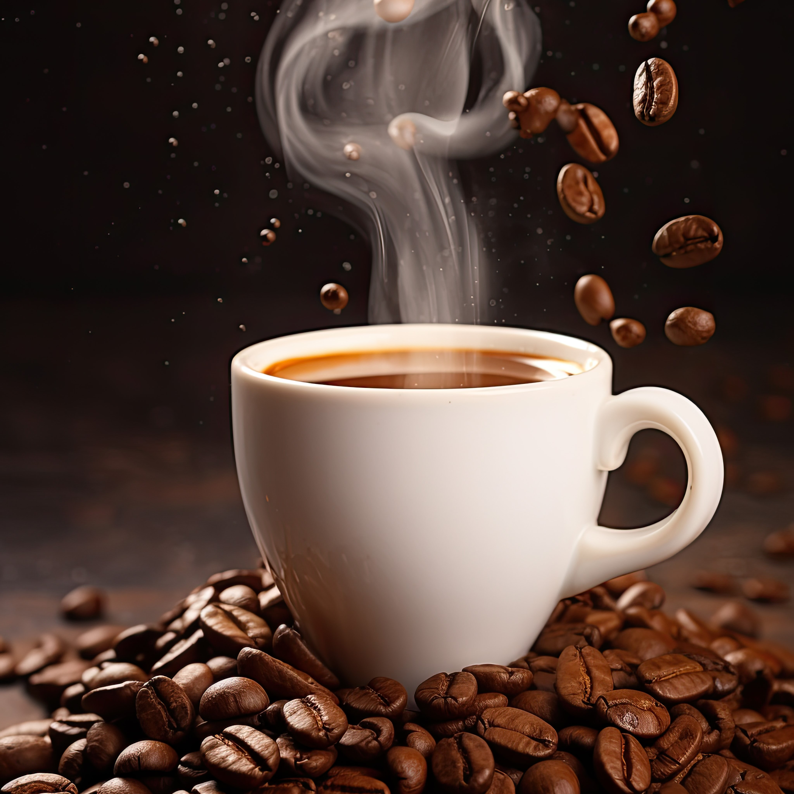

<style>
  .page-section {
    background-color: #1a1a1a; /* Updated background color */
    color: white; /* Set all text to white by default */
  }

  .section-heading {
    color: white; /* Set section heading text to white */
  }

  .text-muted {
    font-size: 1rem;
    line-height: 1.6;
    color: white; /* Set text color to white */
    padding: 15px 20px;
    font-family: "Comic Sans MS", cursive, sans-serif;
    padding-left: 20px;
    background-color: #1a1a1a; /* Set background color to #1a1a1a */
    margin: 10px 0;
    border-radius: 5px;
    box-shadow: 0 2px 4px rgba(0, 0, 0, 0.1);
    transition: background-color 0.3s, transform 0.3s;
  }

  /* Hover styles */
  .text-muted:hover {
    background-color: #333333; /* Darker background on hover */
    color: white; /* Ensure text remains white */
    transform: scale(1.02); /* Slightly scale up on hover */
    cursor: pointer; /* Change cursor to pointer */
  }

  /* Hover styles for images */
  .timeline-image img:hover {
    transform: scale(1.1); /* Slightly scale up on hover */
    box-shadow: 0 4px 12px rgba(0, 0, 0, 0.3); /* Increase shadow on hover */
    cursor: pointer; /* Change cursor to pointer */
  }

  /* Additional styles for timeline panels */
  .timeline-heading h4 {
    color: white; /* Make all timeline heading text white */
  }

  .timeline-panel .timeline-body {
    color: white; /* Ensure text inside the timeline body is white */
  }
</style>
<section class="page-section" id="about">
  <div class="container">
    <div class="text-center">
      <h2
        class="section-heading text-uppercase"
        style="font-family: Showcard Gothic"
      >
        Best Seller
      </h2>
    </div>
    <ul class="timeline">
      <li>
        <a href="../../assets/img/1.jpg" target="_blank">
          <div class="timeline-image">
            
          </div>
        </a>
        <div class="timeline-panel">
          <div class="timeline-heading">
            <h4 style="font-family: La Belle Aurore, cursive">Espresso</h4>
          </div>
          <div class="timeline-body">
            <p class="text-muted" style="font-family: Comic Sans MS">
              Espresso is a strong and concentrated coffee brewed by forcing hot
              water through finely-ground coffee beans under high pressure. It's
              the foundation for many other coffee drinks like lattes,
              cappuccinos, and macchiatos. With a bold flavor and thick crema,
              it's known for giving a quick caffeine boost in a small amount.
            </p>
          
          </div>
        </div>
      </li>
      <li class="timeline-inverted">
        <a href="../../assets/img/2.jpg" target="_blank">
          <div class="timeline-image">
            
          </div>
        </a>
        <div class="timeline-panel">
          <div class="timeline-heading">
            <h4 style="font-family: La Belle Aurore, cursive">Cappuccino</h4>
          </div>
          <div class="timeline-body">
            <p class="text-muted" style="font-family: Comic Sans MS">
              A classic Italian coffee made with equal parts espresso, steamed
              milk, and milk foam. It's often enjoyed as a morning drink and is
              known for its creamy texture and rich, smooth flavor. Cappuccinos
              are frequently topped with a sprinkle of cocoa powder or cinnamon.
            </p>
          </div>
        </div>
      </li>
      <li>
        <a href="../../assets/img/3.jpg" target="_blank">
          <div class="timeline-image">
            
          </div>
        </a>
        <div class="timeline-panel">
          <div class="timeline-heading">
            <h4 style="font-family: La Belle Aurore, cursive">Latte</h4>
          </div>
          <div class="timeline-body">
            <p class="text-muted" style="font-family: Comic Sans MS">
              Lattes are made with one shot of espresso and steamed milk, topped
              with a light layer of foam. They have a smooth, creamy texture and
              are often served in larger cups. Lattes are popular for their
              balanced flavor and are often customized with flavored syrups like
              vanilla or caramel.
            </p>
          </div>
        </div>
      </li>
      <li class="timeline-inverted">
        <a href="../../assets/img/4.jpg" target="_blank">
          <div class="timeline-image">
            
          </div>
        </a>
        <div class="timeline-panel">
          <div class="timeline-heading">
            <h4 style="font-family: La Belle Aurore, cursive">Macchiato</h4>
          </div>
          <div class="timeline-body">
            <p class="text-muted" style="font-family: Comic Sans MS">
              A macchiato is an espresso "stained" with a small amount of
              steamed milk or foam. It has a stronger coffee flavor than a latte
              or cappuccino due to the minimal amount of milk. Macchiatos are
              enjoyed by those who prefer the robust taste of espresso with a
              hint of creaminess.
            </p>
          </div>
        </div>
      </li>
      <li class="timeline-inverted">
        <div class="timeline-image">
          <h4 style="font-family: La Belle Aurore, cursive">
            Be Part
            <br />
            Of Our
            <br />
            Cafe!
          </h4>
        </div>
      </li>
    </ul>
  </div>
</section>
